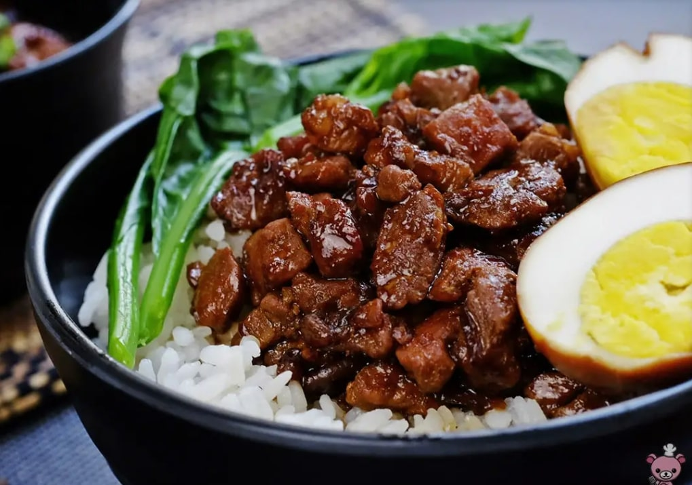
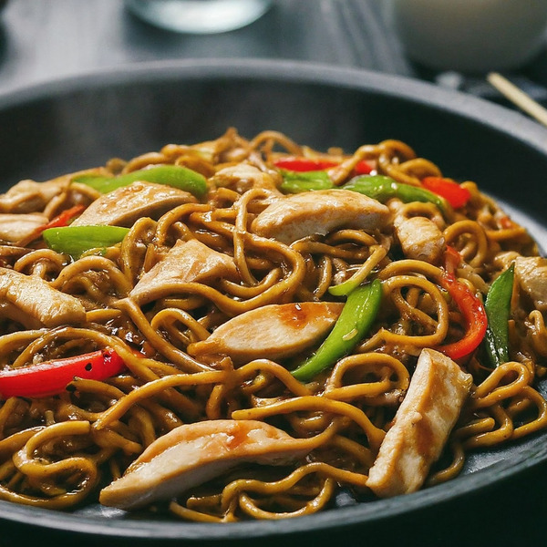
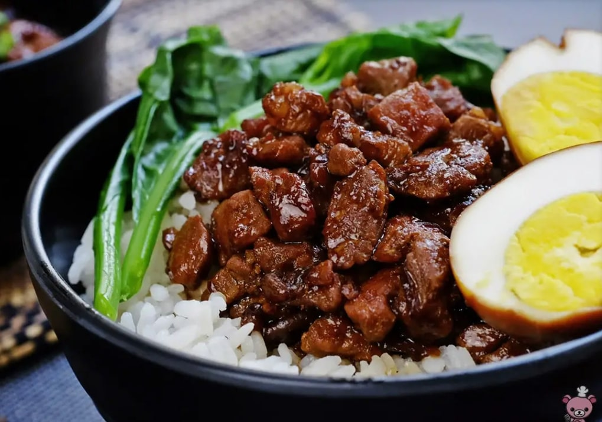
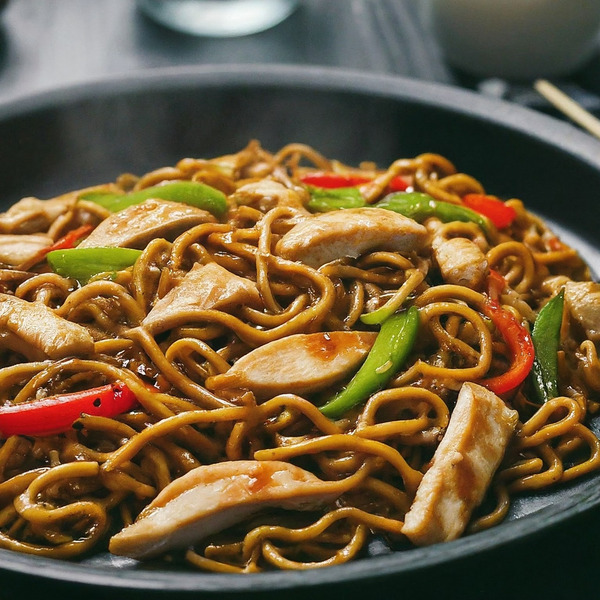

What is Recipository?
Recipository is a colated collection of recipes from around the world.
Recipository is a unique platform that blends the words 'Recipe' and 'Repository', offering a space where food enthusiasts can share their favorite recipes and discover new ones. Our mission is to create a community where home cooks, foodies, and chefs alike can easily exchange culinary ideas, from simple dishes to complex creations.
At Recipository, we believe in the power of food to bring people together. Whether you're looking for a new recipe to try or sharing your tried-and-true family favorite, our platform is designed to help you find inspiration and connect with others who share your passion for cooking. With an intuitive interface and a growing collection of recipes, Recipository is your go-to place to explore, create, and enjoy the world of food.
Recipository is a unique platform that blends the words 'Recipe' and 'Repository', offering a space where food enthusiasts can share their favorite recipes and discover new ones. Our mission is to create a community where home cooks, foodies, and chefs alike can easily exchange culinary ideas, from simple dishes to complex creations.
At Recipository, we believe in the power of food to bring people together. Whether you're looking for a new recipe to try or sharing your tried-and-true family favorite, our platform is designed to help you find inspiration and connect with others who share your passion for cooking. With an intuitive interface and a growing collection of recipes, Recipository is your go-to place to explore, create, and enjoy the world of food.
Click on the button below to start cooking!